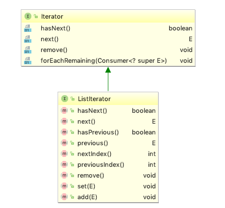
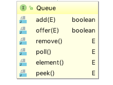

Thinking in Java 12 - Holding Your Objects¶
The
Generics and type-safe containers¶
One of the problems of using pre-Java SE5 containers was that the compiler allowed you to insert an incorrect type into a container.
public class ApplesAndOrangesWithoutGenerics { @SuppressWarnings("unchecked") public static void main(String[] args) { ArrayList apples = new ArrayList(); for(int i = 0; i < 3; i++) apples.add(new Apple()); // Not prevented from adding an Orange to apples: apples.add(new Orange()); for(int i = 0; i < apples.size(); i++) ((Apple)apples.get(i)).id(); // Orange is detected only at run time } } //output: Exception in thread "main" java.lang.ClassCastException: holding.Orange cannot be cast to holding.Apple
With generics, you're prevented, at compile time, from putting the wrong type of object into a container. Now the compiler will prevent you from putting an Orange into apples, so it becomes a compile-time error rather than a runtime error.
Basic concepts¶
The Java container library takes the idea of "holding your objects" and divides it into two distinct concepts, expressed as the basic interfaces of the library:
Collection : a sequence of individual elements with one or more rules applied to them.List ,Set ,Queue - The
Collection interface generalizes the idea of a sequence—a way of holding a group of objects.
Map : a group of key-value object pairs, allowing you to look up a value using a key.
Adding groups of elements¶
Arrays.asList() takes either an array or a comma-separated list of elements (using varargs) and turns it into aList object.Collections.addAll() takes aCollection object and either an array or a comma-separated list and adds the elements to theCollection .
public class Arrays { ... public static <T> List<T> asList(T... a) { return new ArrayList<>(a); } ...
Printing containers¶
You must use
List¶
Lists promise to maintain elements in a particular sequence. The
There are two types of
- The basic
ArrayList , which excels at randomly accessing elements, but is slower when inserting and removing elements in the middle of a List. - The
LinkedList , which provides optimal sequential access, with inexpensive insertions and deletions from the middle of the List. ALinkedList is relatively slow for random access, but it has a larger feature set than theArrayList .
ListIterator¶
The

A
Element(0) Element(1) Element(2) ... Element(n-1) cursor positions: ^ ^ ^ ^
An example:
public class ListIteration { public static void main(String[] args) { List<Pet> pets = Pets.arrayList(8); ListIterator<Pet> it = pets.listIterator(); while(it.hasNext()) System.out.print(it.next() + ", " + it.nextIndex() + ", " + it.previousIndex() + "; "); } } } // Output: // Rat, 1, 0; Manx, 2, 1; Cymric, 3, 2; Mutt, 4, 3; Pug, 5, 4; // Cymric, 6, 5; Pug, 7, 6; Manx, 8, 7;
Set¶
TreeSet keeps elements sorted into a red-black tree data structure.HashSet uses the hashing function.LinkedHashSet also uses hashing for lookup speed, but appears to maintain elements in insertion order using a linked list.
If you want the results to be sorted, one approach is to use a
Map¶
public class LinkedList<E> extends AbstractSequentialList<E> implements List<E>, Deque<E>, Cloneable, java.io.Serializable
Interface

public class QueueDemo { public static void printQ(Queue queue) { while(queue.peek() != null) System.out.print(queue.remove() + " "); System.out.println(); } public static void main(String[] args) { Queue<Integer> queue = new LinkedList<Integer>(); Random rand = new Random(47); for(int i = 0; i < 10; i++) queue.offer(rand.nextInt(i + 10)); printQ(queue); Queue<Character> qc = new LinkedList<Character>(); for(char c : "Brontosaurus".toCharArray()) qc.offer(c); printQ(qc); } } /* Output: 8 1 1 1 5 14 3 1 0 1 B r o n t o s a u r u s *///:~
PriorityQueue¶
The elements of the priority queue are ordered according to their
// natural order PriorityQueue<Integer> priorityQueue = new PriorityQueue<Integer>(); // reverse natural order priorityQueue = new PriorityQueue<Integer>(ints.size(), Collections.reverseOrder());
Foreach and iterators¶
Java SE5 introduced a new interface called
From Java SE5, a number of classes have been made
HashMap<String, HashMap> selects = new HashMap<String, HashMap>(); for(Map.Entry<String, HashMap> entry : selects.entrySet()) { String key = entry.getKey(); HashMap value = entry.getValue(); // do what you have to do here // In your case, another loop. }